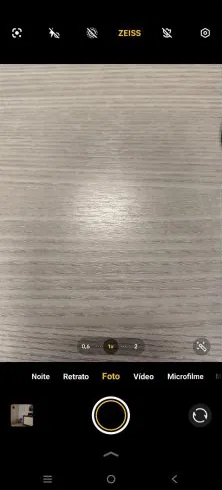
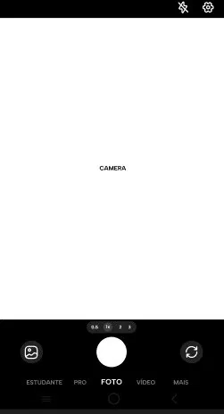
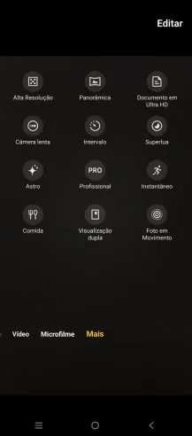
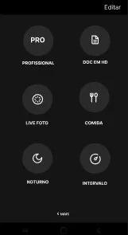
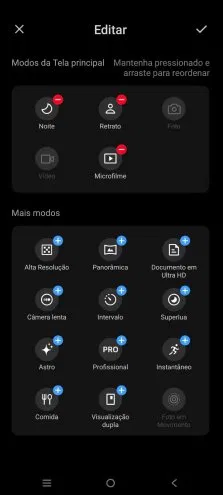
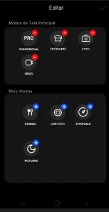

01 — Tela Principal
A barra de modos ganhou o Modo Estudante e o design foi alterado para algo mais simples
Compare as telas antes e depois da atualização da câmera.
A barra de modos ganhou o Modo Estudante e o design foi alterado para algo mais simples


A grade de modos foi simplificada e ganhou um botão Editar para personalização rápida.


Interface reformulada com botões + e − para adicionar ou remover modos da barra principal.

